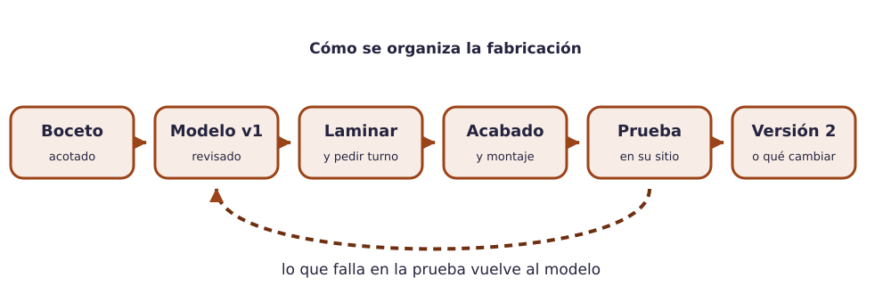

Contenido
El encargo
El equipo elige una pieza del catálogo, la diseña en TinkerCAD, la fabrica (impresión 3D + acabado o base a mano) y la prueba en su sitio. El resultado se entrega en la tarea Pieza final (modelo 3D + foto). Todas las piezas del catálogo resuelven una necesidad real del instituto: al terminar, se quedan en el centro.
Requisitos comunes a todas las piezas
- Cabe de sobra en la bandeja de la impresora y su impresión estimada no pasa de tres horas (Kiri:Moto lo dice).
- Cumple las reglas de diseño para fabricación: paredes ≥ 1,2 mm, voladizos ≤ 45°, holguras donde hay encaje, cara grande abajo.
- Lleva al menos una operación manual del taller: acabado (lijar, repasar agujeros), montaje con tornillería o una base cortada a mano. En la vía solo-3D, el acabado cuenta como operación manual.
- Se prueba en su sitio con el objeto real (la mochila, el móvil, la puerta) y se documenta qué se cambió tras la prueba.
- Tiene bordes redondeados donde se toca y no tiene datos personales.
Catálogo de piezas del centro
Nivel 1 · Una pieza, sin ensamblaje
| Pieza | Para qué | Lo que hay que resolver |
|---|---|---|
| Gancho de mochila | Colgar la mochila del borde de la mesa y dejar el suelo libre. | Abrazar un tablero de 25 mm con 0,5 mm de holgura; brazo de 40 mm; aguantar 5 kg; imprimir de pie. |
| Organizador de rotuladores de pizarra | Que los cuatro rotuladores y el borrador estén siempre en su sitio. | Cuatro huecos de Ø 20 mm inclinados y uno rectangular; base que no vuelque; se fija a la pizarra con cinta de doble cara o imán. |
| Placa táctil de puerta | Identificar un espacio (aula, taller, laboratorio) también con los dedos. | Texto en relieve de 1,5 mm y 20 mm de alto, contraste de color, esquinas redondeadas, dos agujeros para tornillos M4. |
| Soporte de móvil de mesa | Grabar una explicación o ver un vídeo sin sujetar el móvil. | Ranura inclinada 65° para móviles de 8 a 12 mm de grosor, hueco para el cable de carga, base estable. |
Nivel 2 · Dos piezas, encaje o movimiento
| Pieza | Para qué | Lo que hay que resolver |
|---|---|---|
| Soporte de tablet plegable | Sujetar una tablet en el taller o el laboratorio y guardarse plano. | Dos piezas unidas por una bisagra impresa (eje con holgura de 0,4 mm) o por un encaje; dos ángulos de uso. |
| Caja de recogida de tapones | Recoger tapones para la campaña solidaria del centro. | Caja con tapa encajable (como el reto 3, a lo grande) y boca de Ø 35 mm; cartel en relieve; volumen de al menos medio litro. |
| Adaptador de agarre | Que un bolígrafo, una cuchara o unas tijeras se puedan sujetar con menos fuerza o precisión. | Mango engrosado de dos mitades que se unen con una banda elástica o un tornillo; superficie con relieve antideslizante. |
| Portacables de mesa | Que los cargadores del aula no se caigan al suelo cada vez que se desenchufan. | Pieza impresa con tres ranuras para cable + base de madera de 80 × 40 mm cortada y lijada a mano; unión con dos tornillos. |
Nivel 3 · Conjunto de tres o más piezas o con base fabricada a mano
| Pieza | Para qué | Lo que hay que resolver |
|---|---|---|
| Dispensador de tornillería | Que en el taller cada tipo de tornillo tenga su cajón etiquetado. | Cuerpo con dos o tres cajones que deslizan (holgura 0,5 mm), tiradores, etiquetas en relieve; opción de cuerpo en madera y cajones impresos. |
| Atril de lectura plegable | Sostener un libro o una tablet inclinada en la mesa. | Tres piezas: base en contrachapado cortada a mano, respaldo y tope impresos; dos posiciones de inclinación; se pliega plano. |
| Señalética accesible de aula | Placa de espacio con pictograma, texto en relieve y soporte a la altura correcta. | Placa impresa en dos colores (dos piezas encajadas para el contraste), base de madera para pared, tornillería; cumplir una altura de lectura de 140–160 cm. |
| Brazo articulado para el móvil | Grabar las manos mientras se trabaja (para tutoriales del taller). | Base con pinza de mesa, dos brazos con articulaciones de tornillo M4 y tuerca, cabeza con la ranura del soporte de móvil. |
Elegir bien el nivel
El nivel se elige por lo que el equipo puede terminar y probar, no por ambición. Una pieza de nivel 1 impecable, probada y bien documentada vale más que una de nivel 3 a medias. Se puede subir de nivel en la versión 2 si sobra tiempo. El modelo v1 se empieza en casa, en el diseño colaborativo del equipo, para llegar a la primera sesión de fabricación con el volumen principal hecho; en el nivel 3 es imprescindible.
Vías alternativas
Dos caminos igual de válidos
- Vía solo-3D: toda la pieza se imprime; la operación manual es el acabado (soportes, rebabas, lijado, repaso de agujeros) y la prueba de encaje. Recomendada si el equipo va justo de tiempo de taller o si la pieza es de nivel 1.
- Vía solo-manual: la pieza se fabrica entera en madera o cartón pluma a partir del modelo 3D, que hace de plano (se imprime en papel a escala 1:1 como plantilla). Recomendada si la impresora está saturada o si el equipo prefiere el trabajo manual. El STL se entrega igual.
Las dos vías se documentan en la ficha técnica y se evalúan con los mismos criterios.
Cómo se organiza la fabricación
- Boceto y reparto. Antes de dibujar, dos preguntas que van al apartado 1 de la ficha: ¿cómo se resuelve hoy esa necesidad en el centro y por qué no basta? ¿A cuántas personas afecta y con qué frecuencia? Después, boceto acotado a mano de la pieza (foto a
03_fotos). Se decide quién modela, quién lamina, quién prepara el taller y quién documenta. - Modelo v1 en TinkerCAD, revisado con la lista de diseño para fabricación. STL a
01_disenos/<pieza>_v1.stl. - Laminado con los parámetros justificados; captura y tiempo a
02_laminado. Se pide turno de impresora con el G-code listo. Mientras la pieza se imprime, el equipo prepara la base o el acabado. - Acabado y montaje en el taller, con las normas de seguridad.
- Prueba en su sitio. ¿Cumple su función? ¿Encaja? ¿Aguanta? Se anota lo que falla.
- Versión 2 si hace falta y hay tiempo: se corrige el modelo, se reimprime solo lo necesario. Si no hay tiempo, lo que se cambiaría queda escrito en la ficha técnica.

La foto de la pieza
- Pieza terminada, en su sitio o sobre fondo liso, con buena luz y enfocada.
- Un objeto de referencia si la escala no se ve (una regla, un bolígrafo).
- Sin personas ni nombres. Si hace falta enseñar cómo se usa, se ve una mano, no una cara.
Entrega en Moodle
Tarea Pieza final (modelo 3D + foto). Archivos: pieza_final.stl (la última versión, con todas las piezas impresas en el mismo archivo) y pieza_final.jpg. En el texto de la entrega: el enlace al diseño de TinkerCAD y cuatro o cinco líneas con qué probasteis, con qué objeto real, qué falló y qué cambiasteis (o qué cambiaríais). Sin ese texto, la función y la iteración no se pueden valorar. La sube una sola persona del equipo.
Qué se valora
- Que funcione: la pieza cumple su función en su sitio, encaja y aguanta.
- Fabricación correcta: reglas de diseño para fabricación aplicadas, laminado justificado, acabado limpio, uniones firmes.
- Material elegido con criterio de sostenibilidad y accesibilidad, y con la cantidad justa.
- Iteración: se probó, se detectó algo y se corrigió (o quedó escrito qué se corregiría).
- Presentación de dos minutos: al cerrar la unidad, cada equipo presenta su pieza a la clase (qué es, para quién, una decisión de material y la licencia elegida) con reparto de la palabra, tiempo controlado y lenguaje inclusivo, sin estereotipos: «el alumnado», «quien la use», no «los alumnos» ni «los chicos».